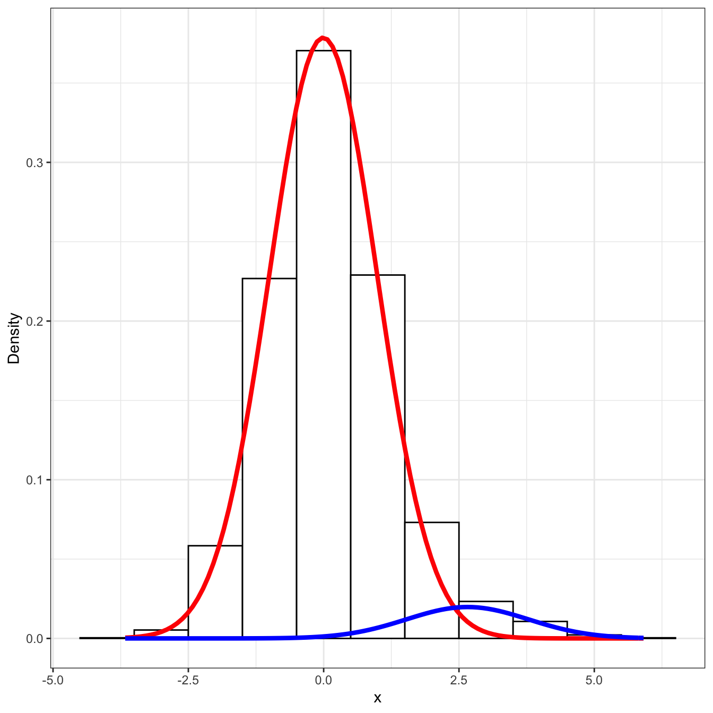

Empirical estimation of FDR
Timothy Daley
7/11/2020
An idea I put into package CRISPhieRmix (R package, paper) is a way to estimate global false discovery rates (FDRs) from local fdrs. The FDR of an observation \(x\) is fraction of false discoveries if we set our threshold to \(x\). Assuming we are looking for extremely large outliers, this is \(\Pr(\text{null} | X \geq x)\). The local false discovery rate, on the other hand, is the probability that observation \(x\) is null, or in other words \(\Pr(\text{null} | x)\).
The idea for empirical estimation came from an anology from Efron, which I believe was in his book Large-Scale Inference, the local false discovery rate is akin to the pdf and the global FDR is akin the cdf. We can see this from the (rather loose) definitions given above. Indeed, formally the global false discovery rates can be defined as the integral over the tail area of the local false discovery rates, as well as the intuition that the overall FDR must be equal to the average of the individual FDRs.
For empirical estimation of the FDR, we just take the average of all local fdr’s lower than the one under consideration to be the estimate of the global FDR. In fact, this is an unbiased estimate of the marginal false discovery rate, defined formally in the one dimensional case (which helps us to give intuition as \[ \text{mFDR}(x) = \frac{\mathrm{E} \big( \sum_{g} 1(x_{g} \geq x \cap g \text{ is null}) \big)}{\mathrm{E} \big( \sum_{g} 1(x_{g} \geq x) \big)}. \] A more formal definition (see Storey 2010) is \[ \text{mFDR} = \frac{\mathrm{E} (\text{true discoveries found})}{\mathrm{E}(\text{total \# discoveries})}, \] with the convention that when no discoveries are found the mFDR is 0 (e.g. \(\frac{0}{0} = 0\)).
We can in fact prove that the empirical estimator is a moment based estimator for mFDR. Let \(\text{fdr}(x_{g})\) denote the local fdr of observation \(g\) (which in my case was genes, hence the notation) \[ \begin{aligned} \text{mFDR}(x) &\approx \frac{\mathrm{E} \big( \sum_{g} 1(x_{g} \geq x \cap g \text{ is null}) \big)}{\mathrm{E} \big( \sum_{g} 1(x_{g} \geq x) \big)} \notag \\ &= \frac{\int_{|y| \geq x} (1 - p) f_{0} (y) dy }{\int_{|y| > x} f(y) dy} \notag \\ &= \frac{\int_{|y| \geq x} \frac{(1 - p) f_{0} (y)}{f(y)} f(y) dy}{\int_{|y| \geq x} f(y) dy} . \notag \\ & = \frac{\mathrm{E} \big(\text{fdr}(y) \cdot 1(|y| \geq x) \big)}{\mathrm{E} \big( 1(|y| \geq x) \big)} \notag \\ &\approx \frac{\frac{1}{G} \sum_{g} \text{fdr}(x_{g}) 1 (\text{fdr}(x_{g}) \leq \text{fdr}(x))}{\frac{1}{G} \sum_{g} 1 (\text{fdr}(x_{g}) \leq \text{fdr}(x))} \notag \\ & \notag \\ &= \overline{\text{fdr}(x_{g}) 1(\text{fdr}(x_{g}) \leq \text{fdr}(x))}. \notag \end{aligned} \]
The advantage for this method is that in some cases the local FDR is easy to compute but the global FDR is difficult. Such I case I encountered in my hierarchical mixture modeling of pooled CRISPR screens. Computing the global FDRs here involves integration over the level sets of a mixture model, which can be difficult. Below is an example of the level sets for when we have 2 guides (measurements) per gene, more guides makes it even more complicated. [levelSets2D.png]
How well does this do? Let’s do some simulations.
Simulations
1-D case
The simplest case is the one dimensional case. We’ll assume that we have a normal mixture model, \[ f(x) \sim (1 - p) \mathcal{N}(0, \sigma_{0}^2) + p \mathcal{N}(\mu, \sigma_{1}^{2}). \] We’ll compare two cases, fitting the mixture model and computing the local FDR and global FDR from the empirical method, and the exact method (because it’s easy to compute in this case).
set.seed(12345)
mu0 = 0
mu1 = 2
sigma0 = 1
sigma1 = 1
p = 0.9
N = 10000
labels = rbinom(N, prob = 1 - p, 1)
mu_vec = sapply(labels, function(i) if(i == 1) mu1 else mu0)
sigma_vec = sapply(labels, function(i) if(i == 1) sigma1 else sigma0)
# sanity check
stopifnot(sum(mu_vec != 0)/length(mu_vec) == sum(labels)/length(labels))
x = rnorm(N, mean = mu_vec, sd = sigma_vec)mixfit = mixtools::normalmixEM2comp(x, lambda = c(0.5, 0.5),
mu = c(0, 1), sigsqrd = c(1, 1))## number of iterations= 1000mixfit$lambda## [1] 0.6263988 0.3736012mixfit$mu## [1] -0.1211857 0.7166598mixfit$sigma## [1] 0.9278408 1.3042685# taken from https://tinyheero.github.io/2015/10/13/mixture-model.html
plot_mix_comps <- function(x, mu, sigma, lam) {
lam * dnorm(x, mu, sigma)
}
library(ggplot2)
ggplot(data.frame(x = x) ) +
geom_histogram(aes(x, ..density..), binwidth = 1, colour = "black",
fill = "white") +
stat_function(geom = "line", fun = plot_mix_comps,
args = list(mixfit$mu[1], mixfit$sigma[1], lam = mixfit$lambda[1]),
colour = "red", lwd = 1.5) +
stat_function(geom = "line", fun = plot_mix_comps,
args = list(mixfit$mu[2], mixfit$sigma[2], lam = mixfit$lambda[2]),
colour = "blue", lwd = 1.5) +
ylab("Density") + theme_bw()
The local FDR here is easy to compute, \[ \Pr(g \text{ is null} | x_{g}) = \frac{p f_{1} (x_{g} | \mu_{1}, \sigma_{1})}{(1 - p) f_{0}(x_{g} | \mu_{0}, \sigma_{0}) + p f_{1} (x_{g} | \mu_{1}, \sigma_{1})}. \] Similarly the global mFDR is equal to \[ mFDR(g) = \frac{\int_{x \geq x_{g}} p f_{1} (x | \mu_{1}, \sigma_{1}) dx}{\int_{x \geq x_{g}} (1 - p) f_{0}(x | \mu_{0}, \sigma_{0}) + p f_{1} (x | \mu_{1}, \sigma_{1}) dx}. \] Of course, the global FDR (not marginal) has the integral outside the fraction above, but the above equation is much easier to compute because the integrals can be calculated from the cdf of the normal distribution.
normal_2group_loc_fdr <- function(x, p, mu, sigma){
# the assumption here is that the null group is the second group
stopifnot((length(p) == length(mu)) &
(length(mu) == length(sigma)) &
(length(sigma) == 2))
p0 = p[1]*dnorm(x, mu[1], sigma[1])
p1 = p[2]*dnorm(x, mu[2], sigma[2])
return(p1/(p0 + p1))
}
normal_2group_mFDR <- function(x, p, mu, sigma){
# the assumption here is that the null group is the second group
stopifnot((length(p) == length(mu)) &
(length(mu) == length(sigma)) &
(length(sigma) == 2))
p0 = p[1]*pnorm(x, mu[1], sigma[1], lower.tail = FALSE)
p1 = p[2]*pnorm(x, mu[2], sigma[2], lower.tail = FALSE)
return(p0/(p0 + p1))
}Now let’s compare the methods. For comparison we will also include the standard Benjamini-Hochberg correct p-value method of computing FDRs.
BH_FDR <- function(x, mu0, sigma0){
pvals = sapply(x, function(y) pnorm(y, mu0, sigma0, lower.tail = FALSE))
return(p.adjust(pvals, method = "BH"))
}
compare_fdr <- function(x, p, mu, sigma, labels){
loc_fdr = sapply(x, function(y) normal_2group_loc_fdr(y, p, mu, sigma))
loc_mFDR = sapply(x, function(y) mean(loc_fdr[which(x >= y)]))
mFDR = sapply(x, function(y) normal_2group_mFDR(y, p, mu, sigma))
bh = BH_FDR(x, mu[1], sigma[1])
true_fdr = sapply(1:length(x), function(i) sum(labels[which(x >= x[i])] == 0)/length(which(x >= x[i])))
return(data.frame(x = x,
loc_fdr = loc_fdr,
loc_mFDR = 1 - loc_mFDR,
mFDR = mFDR,
BH_FDR = bh,
true_FDR = true_fdr))
}
normal_2_group_fdr_comparison = compare_fdr(x, mixfit$lambda, mixfit$mu, mixfit$sigma, labels)
head(normal_2_group_fdr_comparison)## x loc_fdr loc_mFDR mFDR BH_FDR true_FDR
## 1 -0.6924722 0.2224553 0.5882735 0.5876363 0.9353283 0.8777991
## 2 1.1246956 0.4988124 0.2844968 0.2849966 0.4535784 0.6054628
## 3 0.1745351 0.2905057 0.4877070 0.4874114 0.7779131 0.8078440
## 4 -1.9678067 0.2699363 0.6254487 0.6255618 0.9989467 0.9018524
## 5 -1.6442717 0.2407911 0.6227566 0.6226736 0.9935730 0.8996652
## 6 -0.1097847 0.2576892 0.5309278 0.5297593 0.8418791 0.8397959df = data.frame(estimated_fdr = c(normal_2_group_fdr_comparison$loc_mFDR,
normal_2_group_fdr_comparison$mFDR,
normal_2_group_fdr_comparison$BH_FDR),
method = rep(c("loc_mFDR", "mFDR", "BH"), each = N),
true_fdr = rep(normal_2_group_fdr_comparison$true_FDR, times = 3))
ggplot(df, aes(y = true_fdr, x = estimated_fdr, col = method)) + geom_line() + scale_colour_brewer(palette = "Set1") + theme_bw() + geom_abline(intercept = 0, slope = 1)The empirical method is on-par with exact method, though the Benjamini-Hochberg FDRs show better calibration with the true FDR. Let’s now take a look at the hierarchical model.
set.seed(12345)
n_genes = 10000
n_guides_per_gene = 5
genes = rep(1:n_genes, each = n_guides_per_gene)
x = rep(0, times = length(genes))
mu0 = 0
mu1 = 2
sigma0 = 1
sigma1 = 1
p_gene = 0.9
p_guide = 0.5
gene_labels = rbinom(n_genes, prob = 1 - p_gene, 1)
for(i in 1:n_genes){
if(gene_labels[i] == 0){
x[which(genes == i)] = rnorm(n_guides_per_gene, mean = mu0, sd = sigma0)
}
else{
# gene label == 1
guide_labels = rbinom(n_guides_per_gene, prob = 1 - p_guide, 1)
mu_vec = sapply(guide_labels, function(i) if(i == 1) mu1 else mu0)
sigma_vec = sapply(guide_labels, function(i) if(i == 1) sigma1 else sigma0)
x[which(genes == i)] = rnorm(n_guides_per_gene, mean = mu_vec, sd = sigma_vec)
}
}mixfit = mixtools::normalmixEM2comp(x, lambda = c(0.5, 0.5),
mu = c(0, 1), sigsqrd = c(1, 1))## number of iterations= 1000mixfit$lambda## [1] 0.8075129 0.1924871mixfit$mu## [1] -0.05286371 0.72474277mixfit$sigma## [1] 0.9720461 1.3047024# taken from https://tinyheero.github.io/2015/10/13/mixture-model.html
plot_mix_comps <- function(x, mu, sigma, lam) {
lam * dnorm(x, mu, sigma)
}
library(ggplot2)
ggplot(data.frame(x = x) ) +
geom_histogram(aes(x, ..density..), binwidth = 1, colour = "black",
fill = "white") +
stat_function(geom = "line", fun = plot_mix_comps,
args = list(mixfit$mu[1], mixfit$sigma[1], lam = mixfit$lambda[1]),
colour = "red", lwd = 1.5) +
stat_function(geom = "line", fun = plot_mix_comps,
args = list(mixfit$mu[2], mixfit$sigma[2], lam = mixfit$lambda[2]),
colour = "blue", lwd = 1.5) +
ylab("Density") + theme_bw()The hierarchical mixture model has likelihood (see the Methods section of https://link.springer.com/article/10.1186/s13059-018-1538-6) \[ \mathcal{L}(f_{0}, f_{1}, p, q | x_{1}, \ldots, x_{n}) = \prod_{g = 1}^{G} (1 - p) \prod_{i: g_{i} = g} f_{0} (x_{i}) + p \prod_{i : g_{i} = g} \big( (1 - q) f_{0} (x_{i}) + q f_{1} (x_{i}) \big). \] Because of the non-identifiability of \(p\) and \(q\) simultaneously, we marginalized over \(q\) (with a uniform prior) to obtain gene-level local false discovery rates \[ \text{locfdr}(g) = \int_{0}^{1} \frac{(\hat{\tau} / q) \prod_{i: g_{i} = g} q f_{1} (x_{i}) + (1 - q) f_{0} (x_{i}) }{(\hat{\tau} / q) \prod_{i: g_{i} = g} \big( q f_{1} (x_{i}) + (1 - q) f_{0} (x_{i}) \big) + (1 - \hat{\tau} / q) \prod_{i: g_{i} = g} f_{0} (x_{i})} d q. \] We then used the empirical FDR estimator to compute estimates for the global false discovery rates.
crisphiermixFit = CRISPhieRmix::CRISPhieRmix(x = x, geneIds = genes,
pq = 0.1, mu = 4, sigma = 1,
nMesh = 100, BIMODAL = FALSE,
VERBOSE = TRUE, PLOT = TRUE,
screenType = "GOF")## no negative controls provided, fitting hierarchical normal model## Loading required package: mixtools## mixtools package, version 1.2.0, Released 2020-02-05
## This package is based upon work supported by the National Science Foundation under Grant No. SES-0518772.## WARNING! NOT CONVERGENT!
## number of iterations= 1000
crisphiermixFit$mixFit$lambda## [1] 0.95278182 0.04721818crisphiermixFit$mixFit$mu## [1] 0.004446553 1.960693489crisphiermixFit$mixFit$sigma## [1] 1.005094 1.028718null_pvals = sapply(1:n_genes, function(g) t.test(x[which(genes == g)], alternative = "greater", mu = crisphiermixFit$mixFit$mu[1])$p.value)
bh_fdr = data.frame(estimated_FDR = p.adjust(null_pvals, method = "fdr"),
pvals = null_pvals)
bh_fdr['true_fdr'] = sapply(bh_fdr$estimated_FDR, function(p) sum(gene_labels[which(bh_fdr$estimated_FDR <= p)] == 0)/sum(bh_fdr$estimated_FDR <= p))
head(bh_fdr)## estimated_FDR pvals true_fdr
## 1 0.9795228 0.8252480 0.8871217
## 2 0.9390381 0.5319651 0.8395410
## 3 0.9797612 0.8294592 0.8880518
## 4 0.9857013 0.8827119 0.8933676
## 5 0.9470087 0.6006585 0.8558586
## 6 0.7356476 0.1166486 0.6505949crisphiermixFDR = data.frame(estimated_FDR = crisphiermixFit$FDR)
crisphiermixFDR['true_fdr'] = sapply(crisphiermixFDR$estimated_FDR, function(p) sum(gene_labels[which(crisphiermixFDR$estimated_FDR <= p)] == 0)/sum(crisphiermixFDR$estimated_FDR <= p))
head(crisphiermixFDR)## estimated_FDR true_fdr
## 1 0.8063019 0.8621093
## 2 0.8068114 0.8626709
## 3 0.8352201 0.8919991
## 4 0.8385534 0.8952391
## 5 0.7792940 0.8341960
## 6 0.6835582 0.7305573cols = RColorBrewer::brewer.pal(8, 'Set1')
df = data.frame(estimated_FDR = c(crisphiermixFDR$estimated_FDR, bh_fdr$estimated_FDR),
true_FDR = c(crisphiermixFDR$true_fdr, bh_fdr$true_fdr),
method = rep(c("empirical FDR", "BH FDR"), each = dim(crisphiermixFDR)[1]))
ggplot(df, aes(y = true_FDR, x = estimated_FDR, col = method)) + geom_line() + theme_bw() + scale_colour_brewer(palette = "Set1") + geom_abline(intercept = 0, slope = 1)What’s happening with the Benjamini-Hochberg FDRs? Why aren’t many lower than 0.3?
head(bh_fdr[which(bh_fdr$estimated_FDR < 0.3), ])## estimated_FDR pvals true_fdr
## 20 0.2548441 0.0002241322 0.1764706
## 1069 0.2548441 0.0004236029 0.1764706
## 2342 0.2548441 0.0001856662 0.1764706
## 2750 0.2548441 0.0002576694 0.1764706
## 2897 0.2548441 0.0001255965 0.1764706
## 3433 0.2548441 0.0002680069 0.1764706We see that the Benjamini-Hochberg-corrected \(t\)-test is not powerful enough to give meaningful insight into low false discovery rate region. Though, the rest of the region is well-calibrated. However, we see that the empirical estimator of the FDR is very well calibrated. At least in this case when the model is correctly specified. An argument could be made that the empirical estimator has the advantage of knowing the correct model, but that would lead the BH FDRs to not be calibrated and not what we see here.